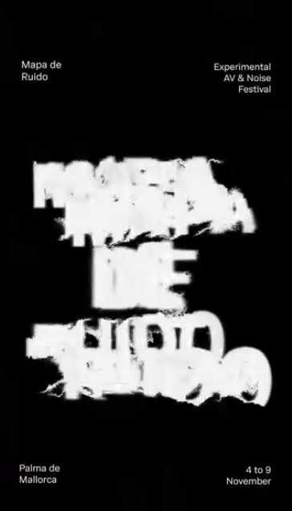

Càpsula 1 · Alta Intensidad
La primera càpsula de 2025 va obrir el circuit amb una sessió d’alta intensitat sonora.
Festival propi
Convertim el soroll en llenguatge.
Mapa de Ruido és el festival d’art sonor experimental d’Honest: un circuit de càpsules on la síntesi modular, el livecoding i la imatge en directe es troben amb el públic.


La primera càpsula de 2025 va obrir el circuit amb una sessió d’alta intensitat sonora.
Una càpsula dedicada a la síntesi modular, amb artistes i públic compartint el mateix espai.
Honest va impartir dins el festival un taller de noves tecnologies —livecoding i mapping— obert a la ciutadania.
Cada càpsula té la seva pròpia imatge i llenguatge: cartelleria, xarxes i materials per acompanyar el festival.